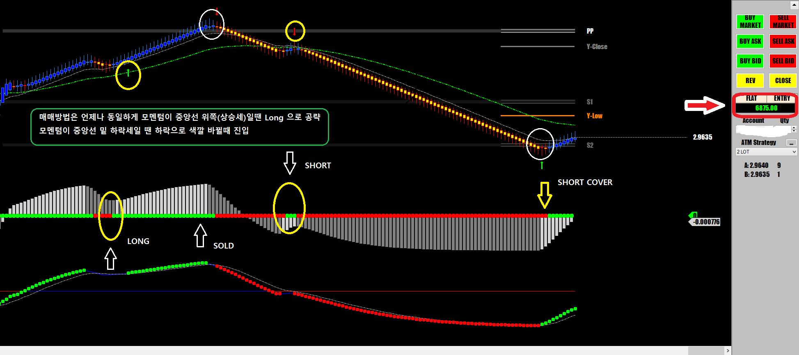

오늘은 오랫만에 구리(copper)를 매매
한국분들은 주로 크루드오일이나 항셍 금 국선등을 매매하는분들이 많지만
미국프로 트레이더들은 매매하는 선물의 종류가 매우 다양하다
옥수수, 콩, 밀, 구리, 콩 meal(ZM) 등등
의외로 이런 Commodity나 Basic Metal이 다른 인덱스 선물이나 크루드오일보다
매매하기가 훨씬 쉽다
commodity는 실수요자들이 거래하는 경우가 많아 매매가 단순하고
크루드오일이나 인덱스선물 Forex처럼 헤지펀드들이 들어와 난리를 치지 않기 때문에 움직임이 지랄발광하는 경우가 드물다
선물매매에서 손실이 나는 이유는 물론 여러가지가 있겠지만
예상을 깨는 황당한 움직임이 수시로 나타나기 때문이고
이런 불규칙한 움직임은 주로 병신같은 헤지펀드들이 질러대기 때문이다
자기돈도 아니고 어차피 다 날려먹어도 매매한 숫자만큼 turn over로 자기들 수수료가 늘어나기 때문에
수익이 나건 손실이 나건 무조건 질러댄다
그러므로 이런 버러지들이 없는곳이 매매하기 좋은곳이다
선물 중에 비교적 헤지펀드들이 기생하지 않는곳이 commodity 마켓이다
그래서 commodity 마켓이 개미트레이더들에겐 불루오션이다
국채선물처럼 너무 느리지도 않고 거래량도 그럭저럭 괜찮고 한틱당 $12.25를 주기 때문에
5계약 가지고 몇번 매매하면 금방 3,4천 달러는 수입이 된다
물론 정확한 진입 신호를 주는 매매차트가 반드시 필요하다
일요일 매매
일요일 오후 3시에 장외마켓이 오픈하고 조금 있다가 바로 매매 시작해서 두번 매매에 중박
